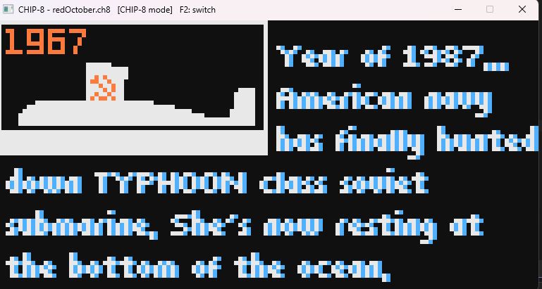

_'}))">CHIP-8 / SUPER-CHIP / XO-CHIP Emulator
An emulator for a family of retro virtual machines, written from scratch. It runs classic 1970s games, hi-res SUPER-CHIP games, and modern 4-color XO-CHIP games with programmable sound. It passes a standard opcode test suite, and the same C++ core is compiled to WebAssembly so it runs right in your browser.